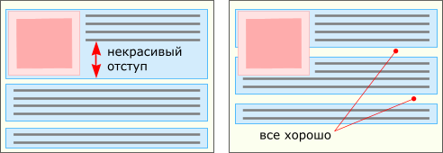

Раскладка в CSS: float Иван Сагалаев, Декабрь 2005
Длинная эпопея с написанием статьи о свойстве "float" завершена. Пусть времени ушло много, но мне думается, что мне удалось максимально доходчиво свести все многообразие поведений этого мощного и несколько странного свойства в одну общую систему.
Кроме того, эта статья содержит рекордное количество иллюстраций среди всего "Учебника" :-)
Судьба свойства "float" в CSS слегка похожа на судьбу тега "table" в HTML: ни то, ни другое вообще не задумывалось как средство создания колонок и вообще раскладки элементов. Однако из-за определенных несовершенств механизма позиционирования float используется для этой цели очень широко. А то, что придумывался он для другого, частенько проявляется разными неочевидными эффектами. Однако перед тем, как их показать, я все же расскажу, как float'ы можно применять для раскладки.
В самом начале — небольшое замечание о терминах. В русском языке не сложилось никакого известного термина для этого инструмента (пока, по крайней мере). Поэтому я предпочитаю писать его в исходном написании — "float". Читается это примерно как "флоут" (ломать скулы произношением "флоАт" не нужно). Заодно тут же прошу простить мне такие вольности как "заfloat'ить", "приfloat'нутый" и т.п. :-)
Принцип работы
Как и позиционирование, float используется для того, чтобы двигать боксы. Но в отличие от позиционирования, которым можно двигать боксы практически произвольно, все, что может float — это сдвинуть элемент к одной из сторон потока, правой или левой.
При этом сам бокс и следующие за ним в потоке приобретают интересное поведение:
Хочу еще раз подчеркнуть неочевидную сразу вещь: сама коробка блока, следующего за float'ом, подлезает под него и занимают всю ширину потока, а вот текст внутри этого блока смещается в сторону и обтекает float.
Дальше интересно, как себя ведут float'нутые в одну сторону боксы, которые идут один за другим. В этом случае следующий бокс будет пытаться уместиться сбоку от предыдущего, с его свободной стороны. И только если ему там не будет достаточно места, тогда он сместится ниже и будет пытаться уместиться уже там.
Есть еще один маленький технический аспект, не обязательный для понимания всей "механики". Заfloat'ить можно как блочные боксы, так и строчные. При этом строчные тут же автоматически становятся блочными. То есть, писать display:block; для float'а излишне.
Из двух описанных особенностей float'ов — прижимание к краю и стыкование сбоку друг друга — вытекают два основных применения их в раскладке:
Колонки
Колонки — это когда блоки текста расположены рядом друг с другом и имеют одинаковую высоту.
Все колоночные раскладки я буду рассматривать на вот таком простейшем HTML'ном коде с двумя блоками:
<body>
<div id="sidebar">
...
</div>
<div id="content">
...
</div>
</body>
Сразу стоит сказать, что делать колонки в растягивающемся по ширине контейнере сложнее, чем с заданной шириной. Тут есть два принципиально разных подхода, подходящих для разных случаев.
Пропорциональная ширина
Если нужно, чтобы ширина колонок менялась пропорционально, при изменении ширины страницы, то подход такой:
#content {
float:right; width:70%;
}
#sidebar {
float:left; width:30%;
}
То есть два блока float'ятся рядом в разные стороны, а их ширина делится в нужном процентном соотношении. Этот способ позволяет легко поменять колонки местами — просто поменяв значения right и left.
Растягивание только одной колонки
Если нужно, чтобы менялась только ширина основной колонки, то предыдущий способ не подходит. Дело в том, что в CSS, к сожалению, нельзя напрямую сформулировать такую вещь как "вся доступная ширина минус конкретное число".
Теперь обратимся к одной из предыдущих статей про блоки в потоке, где я упомянул об одной их полезной особенности автоматически укладываться по ширине в размер родительского бокса. То есть, если блоку в прямом потоке задать, скажем, левый margin, то его ширина соответственно ужмется. А это именно то поведение, которого мы хотели добиться от одной из колонок.
Итак, для нужного нам эффекта мы дадим основному блоку левый margin, чтобы он ужался направо, а боковую панель заfloat'им на это место:
#sidebar {
float:left; width:200px;
}
#content {
margin-left:200px;
}
Но у второго способа есть один очень серьезный недостаток. Обратите внимание, что в исходном HTML блок "sidebar" идет до блока "content" с основным содержимым. Не нужно думать, что так сделано случайно :-). Так сделано специально, потому что иначе этот самый второй способ с наложением колонки поверх margin'а не работал бы.
Как я написал в начале статьи, float'ы сдвигаются только в сторону и дают место следующим блоками, которые съезжают наверх. Поэтому принципиально, чтобы "sidebar" был уже наверху, и тогда основной блок подъедет к нему. Если "sidebar" идет после основного блока, то он так и останется ниже, и ни на какие колонки это похоже не будет.
Это действительно плохо, потому что перечеркивает одну из основных идей CSS: отделение оформления от содержания. Получается, что мы захотели изменить только дизайн, а если блоки расположены "не так", то придется лезть еще и в HTML-шаблоны. Кроме того, с точки зрения структуры могут быть свои веские основания располагать блоки так, а не иначе. Например чтобы пользователь мог начать читать основной текст страницы, не дожидаясь загрузки навигации.
Фиксированная ширина
Все резко упрощается, когда колонки помещаются в фиксированную ширину контейнера. В этом случае лучше всего использовать первый способ (float'ить все колонки), и ширину уже можно задавать не только в процентах, но и в чем хотите, поскольку ее можно точно вычислить.
Высота колонок
Опять-таки, я далеко не случайно "отрезал" на картинках нижнюю часть блоков :-). Иначе бы они как колонки совсем не выглядели, потому что, как нетрудно убедиться, если применить те фрагменты CSS, что я привел, и раскрасить колонки разными цветами, то их высота оказывается разной. Она зависит от количества содержимого в этих блоках.
Этот некрасивый эффект можно обойти несколькими способами.
Первый способ называется "Ложные колонки" ("Faux columns"), опубликован в авторитетном веб-журнале A List Apart в сентябре 2004 года и с тех пор пользуется большой популярностью. Всем рекомендую прочитать либо оригинал, либо русский перевод. Однако если вы сегодня не в настроении кликать, то вот кратко его суть.
Вместо того, чтобы назначать фон самим колонкам, они оставляются прозрачными, а вот их контейнеру назначается фоновая картинка шириной во весь контейнер и повторяющаяся по вертикали. Части этой картинки, находящиеся под разными колонками, красятся в разные цвета и при повторении вниз это дает нужный визуальный эффект.
Что в ложных колонках замечательно — так это то, что вы можете не ограничивать себя на фоновой картинке ровными цветами. На ней, например можно нарисовать эффект тени между колонками, повторяющиеся горизонтальные полоски в виде фона, орнамент по краям.
Недостаток же способа состоит в том, что поскольку у фоновой картинки есть только один размер, ее нельзя применять для пропорционально растягивающихся колонок, так как картинка тянуться не будет (тут я ошибся; все вполне применимо, читайте комментарий). А вот для случая, когда одна из колонок фиксирована по ширине, фон приспособить можно (этот случай, кстати, в "Faux columns" не рассмотрен).
Суть состоит в том, чтобы поместить фоновую картинку только под ту колонку, ширина которой известна. Остальное место будет занято фоновым цветом контейнера, а не картинкой.
Возьмем наш пример и сделаем колонку "sidebar" справа шириной 200 пикселов, а "content" пусть растягивается. Для "sidebar" подготовим картинку размерами 200х1 например ровного синего оттенка. А под "content" отведем желтоватый.
В стилях это выглядит так:
#sidebar {
float:right; width:200px;
}
#content {
margin-right:200px;
}
body {
background:url(bg.png) #FFD right top repeat-y;
}
Единственное правило для контейнера (body) задает все поведение фона:
В реальном примере в CSS еще была пара правил для цвета букв и борьбы с границами, которые сейчас не существенны.
Другой способ уравнивания колонок по высоте был описан недавно и уже сильно известен, поскольку удобен.
Идея его состоит в том, чтобы неравенство высот колонок спрятать, неимоверно удлинив их вниз, чтобы их концы были за пределами реального содержимого страницы. Добиваются этого тем, что сначала ставят колонкам очень большой отступ (padding) вниз, который закрашивается цветом фона. А чтобы все остальное содержимое тоже не сдвигалось туда далеко, колонкам назначается отрицательная граница (margin) такого же размера:
#content,
#sidebar {
padding-bottom:32767px;
margin-bottom:-32767px;
}
Странное число обусловлено тем, что это максимум, который может позволить браузер Safari. На самом деле оно не настолько странное. Кому интересно, это максимальное знаковое целое число, если представлять его 16 битами.
В итоге все, что идет за колонками смещается и находится прямо под содержимым самой длинной из них, а колонки удлиняются вниз. Некрасиво одно — из-за длинных колонок сама страница становится такой же длинной. Чтобы с этим бороться, надо их контейнеру проставить свойство overflow:hidden, которое заставляет контейнер просто отрезать и не показывать то, что выходит за его пределы.
У моего примера, который я взял в самом начале, есть, правда, одна загвоздка. Там колонки лежат прямо в body. А если body проставить overflow:hidden, то браузеры отменяют скроллинг у страницы начисто. Даже если реальное содержимое выше окна. Поэтому колонки надо завернуть в еще один элемент, например div. Но справедливости ради надо сказать, что на практике колонки и так бывают во что-нибудь уже завернуты.
Засада
Куда ж без нее :-). Как я не особенно прозрачно намекнул в самом начале, поскольку float'ы не придумывались как средство создания колонок, это обязательно вылезет чем-нибудь уродливым и аукнется увеличением расхода анальгина (некоторые предпочитают темпалгин или парацетамол).
Причем "вылезет" — в прямом смысле. Давайте немного подвинем наш "голый" пример в сторону реальности, добавив над колонками шапку и внизу какой-нибудь тоже блок с текстом.
<body>
<div id="header">...</div>
<div id="main">
<div id="content">
...
</div>
<div id="sidebar">
...
</div>
</div>
<div id="footer">...</div>
</body>
Для простоты выберем нехитрый колоночный дизайн с фиксированной шириной. Шапку и нижний блок сделаем синими с белыми буквами, основное содержимое белым, а дополнительную колонку тоже синей, но чуть светлее. Цвета колонкам зададим способом "Faux columns".
/* Раскладка в колонки */
body {
width:600px;
margin:0 auto;
}
#content {
float:left; width:450px;
}
#sidebar {
float:right; width:150px;
}
/* Цвета */
#main {
background:url(bg.png) right top repeat-y;
}
#header,
#footer {
background:#238; color:white;
}
Всякие отступы и шрифты я снова опустил для простоты восприятия. Добавим тестового текста и запускаем:
Хм... Ну, колонки, в общем, даже можно разглядеть! Не придерешься! Однако как ни крути, но выглядит все не так, как задумано, а даже можно сказать, все превратилось в некую кашу из цветов и букв.
Чтобы понять, почему так происходит, надо вспомнить описание того, как работает float. А именно, что блоки, идущие за float'ами перестают эти float'ы замечать и подтягиваются вверх. Более того, сам контейнер, в котором float'ы находятся, тоже перестает их замечать и float'нутые блоки проваливаются через низ контейнера, если он заканичвается раньше.
Теперь посмотрим на наш код. Оба float'нутых блока "content" и "sidebar" находятся внутри блока "main". И больше ничего в "main" нет. А раз ему нечего больше содержать, то его высота схлопывается в нуль! Поэтому и не видно на картинке ни белого фона "content", ни светло-синего фона "sidebar", потому что эти цвета назначены в виде фона "main".
Дальше — "footer". Он, подчиняясь все тому же правилу, тоже не видит float'нутых блоков и подтягивается наверх прямо к самому заголовку (поскольку "main" — нулевой высоты). Но в "footer" есть текст. Текст этот уже должен обтекать float'ы: справа "content" и слева "sidebar". Между колонками места не осталось, поэтому текст может начаться только под одной из колонок, которая первая кончится. Там он и есть. Таким образом, "footer", подтянувшись под заголовок, продолжается вниз, пока не закончится весь его текст. И весь этот синий фон, что ниже заголовка — это "footer" и есть.
Зачем такая сложность
Описанное поведение должно внушать недоуменние. Зачем надо было придумывать такие сложности: разделить понятие блока так, чтобы цвета и рамки наверх, а текст — на месте? Но смысл, конечно, есть. Это, наряду со схлопыванием границ, попытка заставить боксовую модель CSS нормально вести себя в условиях простого потока текста. Подробное классическое объяснение этому феномену есть все у того же Эрика Мейера в статье "Containing Floats" (на английском). Постараюсь кратко передать суть.
Представьте себе обычный поток абзацев — блоков с текстом — без всякого позиционирования. В одном из абзацев встречается картинка, которую хочется сдвинуть, скажем, влево, чтобы текст ее обтекал. Такое раньше в HTML достигалось свойством align="left", но в духе вынесения оформления из HTML в стили, для этой функции как раз и придумали свойство float. То есть вместо align этой картинке приписывается float:left.
Пусть сдвигаемая картинка занимает по высоте больше, чем текст абзаца. Если она будет растягивать свой абзац и отодвигать начало следующего ниже, то это будет выглядеть некрасиво из-за увеличенного расстояния между строками соседних абзацев. Поэтому она и проваливается через все границы блоков, сохраняя между ними красивые отступы, а текст ее обтекает.

Решения
Итак, поведение с проваливанием понятно, но оно удобно для непозиционированного текста, а для раскладки — совсем неудобно. Существует два подхода устранящих оба проявления этого свойства: подтягивание следующих боксов наверх и проваливание через низ контейнера.
Для устранения подтягивания блоков существует специальное свойство — clear. Оно заставляет элемент сдвигаться вниз, пока сбоку от него не останется float'ов. Причем можно управлять, с какого именно бока не должно быть float'ов:
clear:left
следит, чтобы float'ов не было слева
clear:right
следит, чтобы float'ов не было справа
clear:both
следит, чтобы float'ов не было с обеих сторон
Таким образом, если мы скажем нашему "footer"у:
#footer {
clear:both;
}
... чтобы слева и справа от него не было float'нутых колонок, то он сдвинется вниз как раз туда, где они обе кончаются.
Но это не решает другой проблемы: того, что float'ы проваливаются через "main", и тот схлопывается, в результате чего не видно колоночного фона, который ему назначен. Проваливание можно победить двумя способами.
Можно явно спозиционировать контейнер каким-нибудь образом. Насколько я понимаю логику спецификации, поведение проваливания считается логичным только в простом потоке. В других случаях оно только мешает. И так оно и есть, как мы убедились. То есть достаточно назначить контейнеру например position:absolute или float:left и ничего не будет проваливается, контейнер будет полностью заключать в себя и текст, и float'ы. В нашем случае (и в большинстве случаев, кстати) это решение вполне подойдет.
Другой интересный способ связан с побочным эффектом свойства overflow. Само по себе оно предназначено для того, чтобы определять, как будет вести себя контейнер при переполнении, когда не может вместить свое содержимое. У него есть четыре значения:
visible
содержимое переходит через край и его нормально видно (это поведение по умолчанию)
hidden
содержимое отсекается за границами контейнера и его там никак не видно
auto
если содержимое переполняет контейнер, у него появляется скроллбар, позволяющий проматывать содержимое, если нет — не появляется
scroll
похоже на auto, только скроллбар у контейнера есть всегда, даже когда содержимое его не переполняет
Так вот побочный эффект заключается в том, что если контейнеру поставить любой overflow, кроме обычного visible, он вдруг растягивается и заключает в себя float'ы, которые в нем сидят, устраняя проваливание.
Какой же overflow использовать? Сразу отпадает scroll — всегда висящие скроллбары явно не нужны. Остаются auto и hidden, которые отличаются только тем, появляется скроллбар при переполнении или нет. Но у нас никакого переполнения нет, наоборот, этим свойством мы заставили контейнер дополнительно растянуться, чтобы он охватывал все свои элементы. Поэтому использовать можно любое значение.
Я суеверно стараюсь использовать hidden, чтобы не появлялось скроллбаров, если из-за каких-то глюков переполнение вдруг возникнет.
У решения с overflow есть одна загвоздка, связанная с поведением Некоторого Браузера™. Оно работает только если контейнеру явно назначены ширина или высота. Из-за этого им иногда неудобно пользоваться, когда вам нужны автоматические размеры, а не жесткие.
Итак, в итоге, чтобы исправить наш пример с колонками, надо сделать так:
#main {
width:100%; overflow:hidden;
}
Кстати! Если бы для рисования фона под колонками я использовал не faux columns, а способ с длинным padding'ом, то он бы потребовал использовать overflow:hidden для "main", что заодно решает и проблему с проваливанием. Но как бы тогда я про это рассказывал?
Все на этом с колонками... Время сходить налить себе вкусного чаю (многие предпочитают кофе) и, прибавив к этому какую-нибудь вкусную булочку, сделать паузу для укладывания в голове всего этого месива. Дальше нас ждет маленькая добавка — про меню.
Напомню, что если несколько идущих подряд блоков заfloat'ить в одну сторону, то каждый следующий будет пытаться разложиться со свободной стороны от предыдущего. Этот эффект широко используется для того, чтобы превращать списки разделов сайта в горизонтально расположенные меню.
Возьмем такой список:
<ul>
<li><a href="/">Начало</a></li>
<li><a href="catalog/">Каталог</a></li>
<li><a href="basket/">Корзина</a></li>
<li><a href="help/">Справка</a></li>
</ul>
Чтобы это было похоже на меню, надо заfloat'ить все li влево, убрать у них атрибутику списка (отступы и буллиты) и еще добавить для красоты отступы, фон и рамку:
/* раскладка */
ul,
li {
float:left;
list-style:none;
margin:0; padding:0;
}
/* вид */
li {
padding:2px 10px;
font:Bold Small Tahoma;
background:#35C; color:white;
border:solid 1px; border-color:#46F #238 #238 #46F;
}
a {
color:white; text-decoration:none;
}
Обратите внимание, что для раскладки все свойства назначаются и для элементов ul, и для li. Это удобно свести в одно правило, потому что:
Мораль
Механизм float — еще одно средство раскладки наряду с абсолютным позиционированием.
Он отличаются в лучшую сторону, позволяя оставить элемент в потоке, что очень удобно для колоночной раскладки.
Однако его минусами является меньшая гибкость из-за того, что элементы нельзя двигать произвольно, и потому что возможность его применять может зависеть от порядка элементов в HTML-разметке.